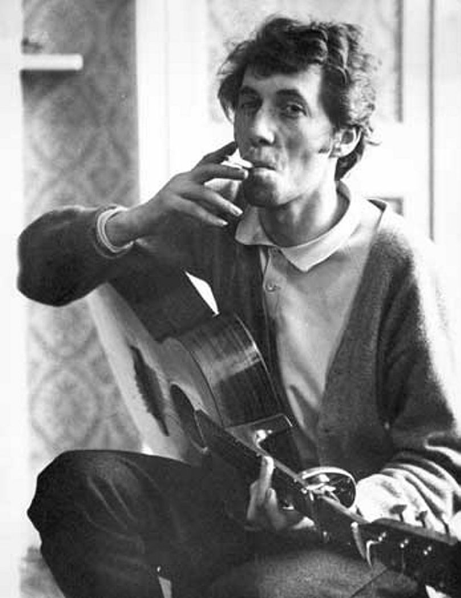

The Scottish Wizard
A similar story to Bob Dylan, however Bert Jansch rose to the folk scene in Europe. His playing did not resemble other folks musicians at the time though.
Popular during the 60s was a lot of classical and soft folk standards. Easy to play, sign, and listen to. Jansch was creating something new. His fingerstyle playing was undoubtably amazing, and his progressions were much newer and rather dissonant. His soulful playing drew people in. The emotional distress and resolution he created was very unique. He was the best of his time. The world would come to hear his music and cries.
